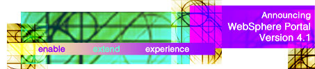

| server |
| home page |
| 0 version of the Apache HTTP Server is the latest and greatest web server from the ASF. . The Apache Software Foundation provides support for the Apache community of open-source software projects. The Apache projects are characterized by a collaborative, consensus based development process, an open and pragmatic software license, and a desire to create high quality software that leads the way in its field. We consider ourselves not simply a group of projects sharing a server, but rather a community of developers and users. |
| MadGoat Software, PO Box 556, Santa Cruz, CA 95061-0556 USA . . The MadGoat Software WWW Server MadGoat Software is a California Corporation dedicated to publishing high-quality software for the OpenVMS operating system. Most MadGoatTM packages are freeware; that is, they may be used for no charge but are copyrighted and not in the public domain. Licensing terms are available if you wish to incorporate one of the MadGoat packages into your commercial product; please contact our sales department for more information. |
|  |